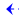
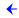

int a = 10
int b -> a
print (a+5, b+5)
--输出 15 15 ✔️
合理，b现在作为int ，和同为int类型的a表现完全一致！
int a = 10
f(int x->){ x=x+1}
f(a)
print a
--拼接参数后得到 int x->a ，所以修改x就是修改a
--输出11 ✔️
--直接传入a即可，不用写*a 或 &a...之类奇怪的东西——这不是简化，而是“语义的完美契合”，这是与传统编程根本性的区别
int a = 10
int b ->a
f(int x){
x=x+1
}
f (b)
print b
--传参时相当于int x=b，所以也是单独拷贝了一份，而b->a，所以实际相当于从a拷贝
既然是拷贝，那修改x就不会修改原值
--输出10 ✔️
而在AXION的方案里，修改引用 & 修改值 不存在歧义
回顾当时C++的问题
int a = 5
int b = 10
int c->a
print c
c->b
print c
c=a
print a,b,c
--c指向a
--箭头->表示修改指针
--输出5
--输出10
--输出5，5，5
不存在Javascript、java、python.....里那种意义不明的“引用对象/值对象”区分，AXION里所有数据类型逻辑完全一致
let a = 123; // 值类型
let b = a;
b = 456; // a 仍是 123 ✔符合直觉
let a = {x:1,y:1}; // 引用类型
let b = a;
b. x = 2; // a.x 也变成 2 ❌ 违反直觉/产生歧义
Javascript、java.....
AXION
let a = 123;
let b = a;
b = 456; // a 仍是 123 ✔符合直觉
let a = {x:1,y:1};
let b = a; // =一定是拷贝，b与a 是完全独立的个体
b. x = 2; // a.x 仍然是1 ✔符合直觉
AXION的语义里，绝对不会默认隐性地区分所谓的“引用类型/值类型”，一切语义都严格遵循用户主观意愿
用户应当手动用->定义“指针”，杜绝任何歧义：
let a = {x:1,y:1};
let b -> a; // b指向a，此时可通过b来修改a
b. x = 2; // a.x=2 ✔符合直觉
不存在C语言中“对数组变量名的特殊处理”的情况，AXION里所有数据类型【变量名】语义完全一致
int a[5] = {1,2,3,4,5};
// 数组的变量名是地址
printf("%p\n", a); // 0x1000....
C语言
int a = 10;
printf("%d\n", a); // 10，其他类型的变量名是值
int a[5] = {1,2,3,4,5}
int b = 10
// 所有对象的变量名，都用于指代对象本身，逻辑完全统一
print a // {1,2,3,4,5}
print b // 10
print ~a // 要手动取引用，才会得到地址
AXION
不存在“C系列”对结构体访问的特殊处理，AXION里无论是指针还是源对象，访问逻辑完全一致（因为类型签名相同）
struct Point a = {1,1};
struct Point* ptr = &p;
printf("%d\n", (*ptr).x); // 1（先解引用，再用 .）
printf("%d\n", ptr->x); // 1（箭头简化，等价上面）
C、C++、C#
AXION
Point a = {1,1}
Point b ->a //声明b指向a
// 无论ab，均用.访问成员
print a.x // 1
print b.x // 既然b都指向{1,1}这个对象了，那当然可以直接用b.x访问，合情合理
-- 一切指针重定向逻辑由->承载， 对象签名上没有任何变化，都是 “Point”，所以可统一用Point行为规则
-- 对象签名的不同(Point 和 *Point不同)必然导致语法规则的不同
方法论：解耦了 句柄操作 和 对象操作
->表示修改句柄
= 表示修改对象（赋值）
- 这里的句柄类型就是“指针”，反应着符号与对象之间的关系
--“统一的世界观”对开发者是至关重要的
运算
函数调用：用指针修改外部对象的两种设计风格
函数调用：像普通对象一样使用指针
明确区分：修改指针 & 修改值
适用任何对象，赋值逻辑完全一致
方法论：
把指针语义交给->负责 (由->来告诉编译器自动解引用)
从而解放变量a的语义、并保护了类型签名
目的：通过f修改源对象
int a = 10
f(~int x){
x~ = x~ + 1
}
f(~a)
print a
--形参x 是 int类型的引用，这意味着它只接受【内存地址】作为参数
--由于x本身是~int，两边同时解引用，所以x~就是int，因此可以用x~来操作目标int
--传入a的地址，~a就是~int类型

函数设计：形参是指针，直接用句柄修改
用户调用：只需传入句柄(符号名)

函数设计：形参是地址，通过解引用修改
用户调用：主动传入地址
在底层开发里，自由操作指针的能力是非常强大且实用的，你可以用它实现更多有想象力的功能，例如
--先定义一个T类型的指针
T a->Null
--接着自由操作a_ADDR，便可将任意内存数据当做T类型来操作，能最大限度满足你对底层硬件的任何操作需求
a_ADDR = 0x7FF0A
a_ADDR = ~b
a_ADDR = a_ADDR + 16
...
print a
--单论指针操作，传统编程从技术上也能实现，但回顾前文众多对比都能证明：AXION更优雅、更便捷
更灵活的用法
-- 编译器在符号表里自动生成 ~T a_ADDR : 0x0000
-- ~b只要是个地址即可，和b本身是不是T类型无关

T a

-- 0x7FF1A，纯数学运算，与T类型无关，无需像传统编程那样用(char*)转型




像调整"机械臂"那样自由调整ADDR
你可以把任意一块内存按T类型处理
-- T 类型
假设sizeof T=2
int a = 10, b = 20;
int& r = a; // r 是 a 的引用，底层仍基于指针实现（内存里保存的是 &a）
r = b;
// 歧义：是把 a 改成 20，还是让 r 引用 b？
实际执行：把 a 的值改成 20。r 仍然引用 a ——❌️歧义
--输出11 ✔️
-- 等号=表示修改对象
-- 栈存储
-- 这里先别纠结关键字是不是let、b有没有类型签名
这里只是模仿JS语法讨论=赋值的问题